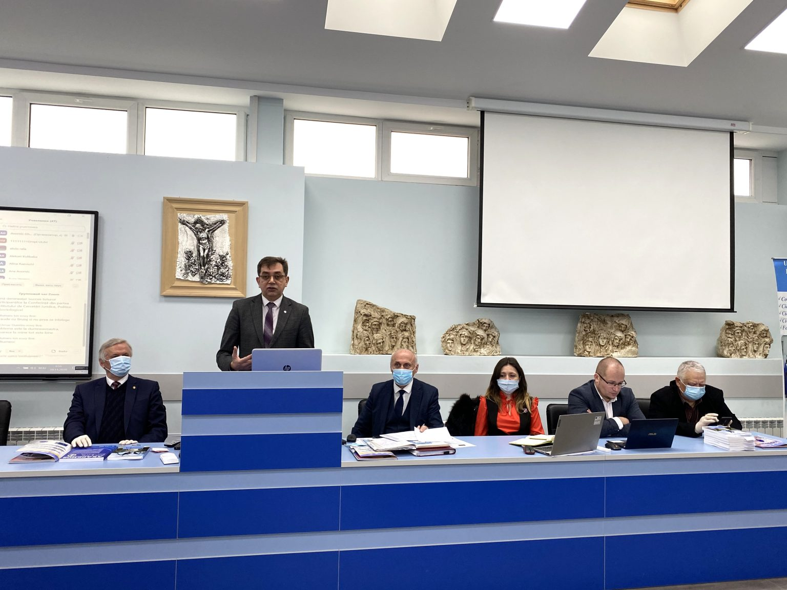
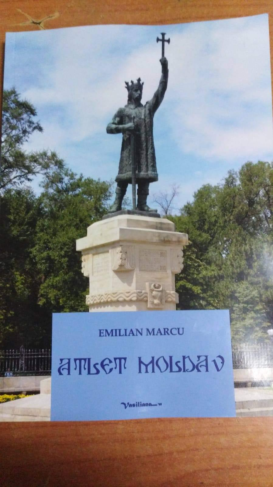

Eveniment ANTI-TORTURĂ găzduit de USPEE: „Vrem să
scoatem în evidență anume acele neajunsuri pe care încă
le avem și să vedem cum le putem combate”
„Toți împreună vom spune NU torturii în Moldova, societatea civilă împotriva torturii”, este
titlul unei conferințe științifice organizate recent de Centrele de asistență juridică,
psihologică și de reabilitare primară a victimelor torturii și Universitatea de Studii Politice
și Economice Europene „Constantin Stere”. În cadrul evenimentului au fost discutate
problemele legate de tortură cu care se confruntă Republica Moldova.
„Este o problemă nu doar a RM, chiar dacă acesta este un proiect care se realizează în RM. Ne-am propus drept scop ca și în RM să-i implicăm pe toți cei interesați în combaterea torturii.
Sperăm să fie un eveniment bun și benefic pentru toți. Vrem să scoatem în evidență anume acele neajunsuri pe care încă le avem și să vedem cum le putem combate”, a declarat Gheorghe Avornic,
rectorul Universității de studii Politice și Economice Europene „Constantin Stere”.Proiectul a fost implementat de Institutul pentru Democrație și are drept scop crearea a trei Centre
de asistență juridică, psihologică și reabilitare primară a victimelor torturii.

În cadrul evenimentului a fost, de asemenea, a fost lansată încă o ediție a cărții „Atlet moldav” de Emilian Marcu. Monografia in versuri este dedicată Domnitorului Ștefan cel Mare
și a fost prezentată de profesorul universitar și diplomatul român Cătălin Bordeianu. Ediția a III-a a volumului Atlet Moldav deschide seria publicațiilor aniversare cu prilejul sărbătoririi a 35
de ani de la fondarea Universității Americane din Moldova și a 25 de ani de la înființarea USPEE.
